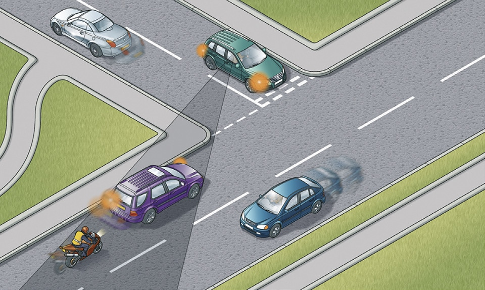

Road users requiring extra care (204 to 225)
|
3. Motorcyclists and cyclists (211 to 213)
211
It is often difficult to see motorcyclists and cyclists, especially when they are waiting alongside you, coming up from behind, coming out of or moving off from junctions, at roundabouts, overtaking you or filtering through traffic. Always look out for them before you emerge from a junction; they could be approaching faster than you think.
Do not turn at a junction if to do so would cause the cyclist going straight ahead to stop or swerve, just as you would do with a motor vehicle.
When turning right across a line of slow-moving or stationary traffic, look out for and give way to cyclists or motorcyclists on the inside of the traffic you are crossing. Be especially careful when moving off, turning, and when changing direction or lane. Be sure to check mirrors and blind spots carefully.
It is often difficult to see motorcyclists and cyclists, especially when they are waiting alongside you, coming up from behind, coming out of or moving off from junctions, at roundabouts, overtaking you or filtering through traffic. Always look out for them before you emerge from a junction; they could be approaching faster than you think.
Do not turn at a junction if to do so would cause the cyclist going straight ahead to stop or swerve, just as you would do with a motor vehicle.
When turning right across a line of slow-moving or stationary traffic, look out for and give way to cyclists or motorcyclists on the inside of the traffic you are crossing. Be especially careful when moving off, turning, and when changing direction or lane. Be sure to check mirrors and blind spots carefully.

Rule 211: Look out for motorcyclists and cyclists at junctions
212
Give motorcyclists, cyclists, horse riders, horse drawn vehicles and pedestrians walking in the road (for example, where there is no pavement), at least as much room as you would when overtaking a car (see Rules 162 to 167). Drivers should take extra care and give more space when overtaking motorcyclists, cyclists, horse riders, horse drawn vehicles and pedestrians in bad weather (including high winds) and at night. If the rider looks over their shoulder it could mean that they intend to pull out, turn right or change direction. Give them time and space to do so.
213
On narrow sections of road, on quiet roads or streets, at road junctions and in slower-moving traffic, cyclists may sometimes ride in the centre of the lane, rather than towards the side of the road. It can be safer for groups of cyclists to ride two abreast in these situations. Allow them to do so for their own safety, to ensure they can see and be seen. Cyclists are also advised to ride at least a door’s width or 1 metre from parked cars for their own safety.
On narrow sections of road, horse riders may ride in the centre of the lane. Allow them to do so for their own safety to ensure they can see and be seen.
Motorcyclists, cyclists, horse riders and horse drawn vehicles may suddenly need to avoid uneven road surfaces and obstacles such as drain covers or oily, wet or icy patches on the road. Give them plenty of room and pay particular attention to any sudden change of direction they may have to make.
Give motorcyclists, cyclists, horse riders, horse drawn vehicles and pedestrians walking in the road (for example, where there is no pavement), at least as much room as you would when overtaking a car (see Rules 162 to 167). Drivers should take extra care and give more space when overtaking motorcyclists, cyclists, horse riders, horse drawn vehicles and pedestrians in bad weather (including high winds) and at night. If the rider looks over their shoulder it could mean that they intend to pull out, turn right or change direction. Give them time and space to do so.
213
On narrow sections of road, on quiet roads or streets, at road junctions and in slower-moving traffic, cyclists may sometimes ride in the centre of the lane, rather than towards the side of the road. It can be safer for groups of cyclists to ride two abreast in these situations. Allow them to do so for their own safety, to ensure they can see and be seen. Cyclists are also advised to ride at least a door’s width or 1 metre from parked cars for their own safety.
On narrow sections of road, horse riders may ride in the centre of the lane. Allow them to do so for their own safety to ensure they can see and be seen.
Motorcyclists, cyclists, horse riders and horse drawn vehicles may suddenly need to avoid uneven road surfaces and obstacles such as drain covers or oily, wet or icy patches on the road. Give them plenty of room and pay particular attention to any sudden change of direction they may have to make.